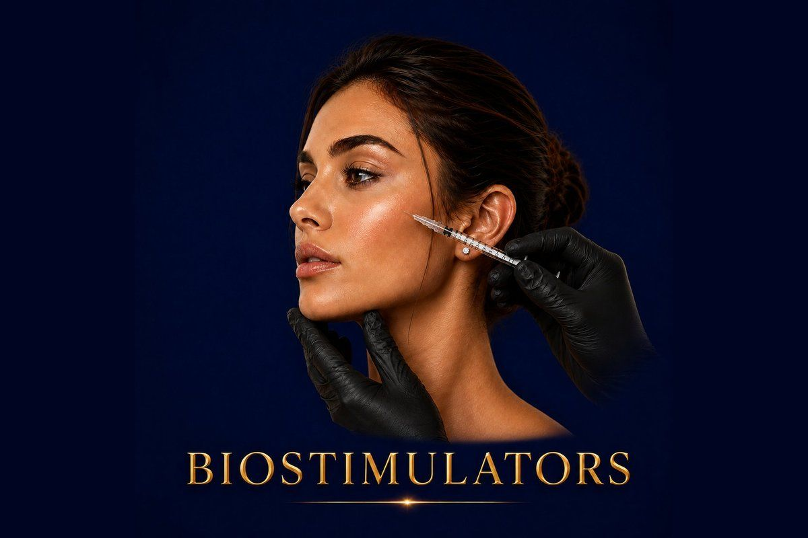

Skin Rejuvenation
Stimulate your own collagen for natural, gradual, longer-lasting rejuvenation.
✓ Full medical content — verified for SEO and patient information.

About
Biostimulators (also called collagen stimulators or 'bio-revitalizers') are an advanced category of injectable treatments that work in a fundamentally different way from traditional fillers. Instead of adding volume directly, they trigger your own body to produce new collagen, elastin, and structural proteins — gradually rebuilding the skin's foundation from within. They are made from biocompatible materials like Poly-L-Lactic Acid (PLLA), Calcium Hydroxyapatite (CaHA), or Polycaprolactone (PCL) — substances that the body slowly metabolizes while replacing them with newly produced natural collagen. The result is rejuvenation that doesn't look like 'work was done.' Patients see gradual improvement over weeks and months, with skin that becomes firmer, denser, smoother, and visibly younger — without sudden volume changes or 'filler face.' At Hollywood Clinic Egypt, biostimulators are reserved for patients who want a more anatomical, longer-lasting, and natural approach to aging — and who can be patient enough to wait for results to build over months.
Why It Works
The Process
full skin and anatomical assessment to determine if you're a good candidate
cleansing, marking, and topical numbing of the area
the biostimulator is placed deep in the skin or fat layer using a cannula or needle
45 minutes
areas are massaged immediately after to ensure even product distribution
a 5-day at-home massage routine is part of the protocol for most products
Most biostimulators require 2–3 sessions spaced 4–6 weeks apart
6 months as new collagen forms
24 months — much less frequent than HA fillers. **
Who It's For
Safety First
Quality You Can Trust
Treatment Comparisons
HA fillers add volume immediately by filling the area. Biostimulators trigger your own collagen to gradually build over months. HA fillers last 6–18 months; biostimulators last 2+ years. HA is reversible; biostimulators are not.
Botox relaxes muscles. Biostimulators rebuild skin structure. Completely different actions — and they pair beautifully together.
Skin Boosters hydrate and improve skin quality from the surface inward. Biostimulators rebuild deep collagen support. Different layers, different effects, often combined in a layered protocol.
PRP uses your own blood platelets to stimulate skin renewal. Biostimulators use synthetic materials that produce a stronger, longer-lasting collagen response. Both are valid; biostimulators are more potent and longer-lasting.
HIFU and RF use energy to heat tissue and stimulate collagen externally. Biostimulators do it from inside the skin. Many specialists combine both for compound results.
Surgery removes excess skin. Biostimulators rebuild skin from inside without cutting. For early-to-moderate laxity, biostimulators delay or replace the need for surgery; for advanced laxity, surgery remains the gold standard.
Investment
Biostimulators
Biostimulators are typically more expensive than HA fillers — but this needs to be evaluated correctly.
Final pricing is determined after a free consultation, because every case is different.
Book Free ConsultationWhy Hollywood Clinic
Dr. Marwa Magdy — Consultant in Dermatology & Aesthetic Medicine. Highly experienced in biostimulators as part of her signature combination treatments, including hand rejuvenation protocols combining Sculptra/Radiesse with Morpheus8
Dr. Rana Safwat — Dermatology, Laser & Aesthetic Specialist. Expert in biostimulator injection for face and body with extensive international training
FAQ